Animal Crossing: amiibo Festival Animal Crossing: City Folk 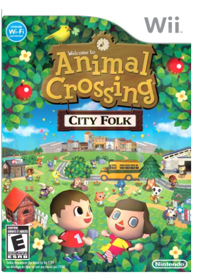 NintendoIf you were given the keys to your own community, what would you do? Go fishing, collect shells or watch fireworks with friends? Build a snowman, exchange presents with family or decorate your house for the holidays? Take a trip to the city, go on a shopping spree or visit friends from all over the globe? In Animal Crossing: City Folk, life moves at a relaxed pace, but the world brims with endless possibilities.Build your own community Enjoy mini-games against friends. View larger. Get to know your neighbors. View larger. Play at all hours of the day. View larger. Feel free to have company over. View larger. Gameplay You make the whole story, as you and up to three other players move into a town and just live life. Befriend your animal neighbors, decorate your house with cool furnishings, fill up your wardrobe, get to know the local wildlife, hop on a bus to visit the new city and just explore the world. There are a million different ways to play. Every charming animal character has a personality: some are grouches while others are chatterboxes. And there's no final goal or high score to hit. The game keeps going for as long as you want to play, and your town will always be there when you return. Move into town, buy a house and then do whatever you want. Time and seasons pass as they do in the real world, so there's always something different happening. Collect more than 2,400 items, go fishing for rare and interesting fish, catch all kind of cool bugs, dig up dinosaur fossils and buried treasure, hang out with other players or spend the day in the city. There's so much to do, and you have all the time in the world to explore it all. DS Suitcase Mode The DS Suitcase lets you carry your character from your Wii console to a friend's, thus giving people without an Internet connection the ability to experience multiplayer modes. Additionally, you can move your character from Animal Crossing: Wild World on Nintendo DS and play as him/her in Animal Crossing: City Folk. Key Game Features There's Always Something New To Do: In the living, breathing world of Animal Crossing: City Folk, days and seasons pass in real time, so there's always something to discover. Catch fireflies in the summer, go trick-or-treating on Halloween or hunt for eggs on Bunny Day. If you're in the mood for something a little faster paced, take a bus to a new urban city area that's unique to Animal Crossing: City Folk. There you can catch a show at the theater or check out the sales at Gracie's boutique. But if you don't show your face back home for too long, your neighbors will miss you.Play With and Hear Up to Four Friends: Up to four people from your household can live and work together to build the perfect town. Design clothes and patterns, write letters and post messages on the bulletin board for each other, or play online using your broadband connection and invite up to three friends to visit your town using Nintendo Wi-Fi Connection. With the new optional Wii Speak microphone (sold separately), it's like you're all in the same room. The microphone sits atop the sensor bar and picks up the conversation of everyone in the room to encourage a more inclusive experience.Get to Know Your Neighbors: The heart of Animal Crossing: City Folk is building relationships with the animals in your town as well as with other players. Befriend your animal neighbors by exchanging letters, gifts and favors. Animals can also move from town to town, bringing their memories and stories from their old towns with them. And since animals are notoriously loose-lipped, they spill all the juicy details.Express Your Personal Style: Customize your town, your house and yourself by collecting bugs, fish, fossils, art, furniture, clothes and accessories. You can also go to the salon in the city to change your hairstyle and get a Mii makeover. Plus, if you design clothes in the tailor's shop, animals will wear them and maybe even bring them to other towns.Your Neighbors Familiar faces such as K.K. Slider, Tom Nook, Blathers and Mr. Resetti all appear, as well as a bunch of new characters like Festivale host Pavé and Bug-Off judge Bud. Many characters who occasionally visited your town in previous Animal Crossing games have now set up permanent shop in the city, so you can see them anytime. Special Powers, Weapons, Moves & Features: Use the Wii Remote pointer to type letters, use items, draw designs for clothing or wallpaper, drag clothing or items onto your characters, interact with animals or objects, or lead your character around the world. Use Nintendo Wi-Fi Connection to hang out in real time with up to three of your friends. You can also send them e-mails and text messages from the game. Play at different times of the year to experience different activities, holidays and seasons. And when visiting a friend in another country, experience the holidays native to their culture. Nintendo Wi-Fi Connection Up to four people can play together in real time via Nintendo Wi-Fi Connection. The host opens his or her gate to allow friends into the town, where they can perform all sorts of activities: fish, write letters to townsfolk, shop at the store, swap items, play hide-and-seek ... anything. Up to four players can interact in real-time, communicating via text chat, mic chat and emoticons. WiiConnect24: Using WiiConnect24, you can buy and sell items to friends by participating in silent auctions, view actual players' homes in the Happy Room Academy office or send letters to other players' towns. The Biggest Loser  Disney Infinity 2.0 Edition Marvel Super Heroes Starter Pack  Disney Infinity 1.0 Starter Pack  In Disney Infinity, you have the freedom and endless opportunity to create stories and play experiences starring some of your favorite Disney and Disney/Pixar characters. Discover three play sets, including Monsters University, Pirates of the Caribbean, and the Incredibles, with up to 2-player local co-op. The Disney Infinity Starter Pack comes with the following: 1 Disney Infinity Video Game, 3 Disney Infinity Figures: Sulley, Captain Jack Sparrow and Mr. Incredible, 1 Disney Infinity Base, 1 Disney Infinity Power Disc, 1 Starter Pack Play Set Piece, 1 Web Code Card. Expand your adventures by collecting additional Play Sets, Disney Infinity Figures, and Power Discs, as they become available. Items sold separately. Special Wii U Features In Toy Box, browse items on the GamePad screen easily with touch controls and create levels.In the Play Sets, the Wii U GamePad lets players activate missions from their mission log. Anywhere in the game, players can also choose tools and packs on the GamePad and not have them clutter their TV screen. The Wii U Off-TV play feature lets players experience the full game of Disney Infinity on the GamePad screen, even if the TV is turned off. The Incredibles Activate the powers of Mr. Incredible on a quest to save the world from Syndrome and his super villains. Pirates of the Caribbean Plunge into adventure as Captain Jack Sparrow in the Pirates of the Caribbean and find pieces of the Kraken’s Bane. Monsters University Play as Sulley in his early student days in the world of Monsters University. Toy Box Create your own worlds in Toy Box with up to 2-player local or 4-player networked online play. Mix, match, and mash up unlocked toys from the Play Sets along with Disney and Disney/Pixar characters to invent just about any adventure you can imagine. You can also expand your Disney Infinity experience by downloading user generated Toy Boxes created by Disney and the community. Donkey Kong Country Returns  Donkey Kong Country Tropical Freeze - Nintendo Wii U  Donkey Kong’s ultimate platforming adventure barrel-blasts onto Wii U! Team up with buddies to master their moves, from Diddy Kong and his jetpack to the fresh additions of Dixie Kong with her spinning ponytail and Cranky Kong with his pogo-cane jump. Journey across 6 distinct islands filled with dynamic levels and non-stop action. Reclaim the now-frozen DK Island from the invading Snowmads. Master Donkey Kong’s ground pound and each of his buddy’s unique abilities to navigate diverse island environments like Mangrove swamps, Savannah storms, ocean depths, and the frozen lands of DK Island. The barrel-blasting, mine-carting action of Donkey Kong Country is back, along with a bushel of new features like upgraded underwater swimming, a new “plucking” system, dynamic viewing angles from a rotating camera, and collectables galore. Team up with friends in local 2-player multiplayer* to share in the adventure and reclaim DK Island from a host of wintery baddies and bosses. Key Features Journey through all-new levels that twist, turn and transform in consistently fresh ways. Plus, enjoy spectacular views thanks to the dynamic, rotating camera.Dixie Kong and Cranky Kong join in the adventure as a playable character alongside Diddy Kong. Any of them can buddy up with Donkey Kong to shake up the action.Fight off the arctic invading Snowmads as you run, jump, roll, “pluck” and swim across six distinctly themed islands, each packed with lively levels of non-stop action and surprises.Team up with friends in local, cooperative multiplayer that lets two players share in the adventure*.Discover hidden areas and gather numerous collectibles to unlock additional content, use life-saving items, or catch a ride on diverse vehicles.Enjoy new music from the original composer of the Donkey Kong Country series. *Additional accessory required, sold separately. Choose to play as your favorite Donkey Kong characters, including Diddy Kong, Dixie Kong, & Cranky Kong View larger Dixie Kong and her spinning ponytail will help Donkey Kong navigate his way throughout all new levels View larger Conquer the arctic Snowmads found throughout this frozen island adventure View larger Cooperative multiplayer action is another way to share in the adventure and reclaim the DK island View larger Epic Mickey 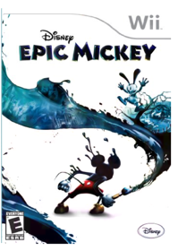 DisneyDisney Epic Mickey is an action-adventure platforming game for the Wii console that sends Mickey Mouse on an epic journey of creativity and discovery. As Mickey, the player is propelled into Wasteland, an alternate world made up of Disney’s forgotten creative efforts, and is given the power to wield paint and paint thinner to dynamically change the world while determining Mickey’s path to becoming an epic hero. Through the use of this unique paint and paint thinner, the key components of animation and Mickey’s tools for impacting his world, players will have the ability to shape how the story unfolds as they discover the concept of “Playstyle Matters” – an innovative style of gameplay created by Disney Interactive Studios’ Junction Point, led by industry luminary Warren Spector, where players creatively tackle different challenges in the world to explore all the possibilities and storylines – but with consequences for their chosen actions.Epic Mickey 2: The Power of Two - Nintendo Wii U  Excite Truck  Ghost Squad  Godzilla: Unleashed  Guitar Hero Live - Wii U  Activision makes no guarantees regarding the availability of online play or features, including without limitation GHTV, and may modify or discontinue online services in its discretion without notice. The House of the Dead 2 & 3 Return 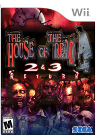 Sega Of America, Inc.HORDES OF ZOMBIES UNLEASHED ON THE WII! Two grisly titles from the popular THE HOUSE OF THE DEAD¿ series are being compiled into one action-packed horror shooter for the Wii¿. Both THE HOUSE OF THE DEAD 2 and 3 will feature the original arcade experience, complete with branching storylines, over six ghoul-filled game modes and bonus content. Re-live your glory days in the arcades and mow down packs of clawing, biting undead with the new rapid-fire Wii Zapper¿!The House of the Dead: Overkill  I Spy Game Pack  The Legend of Zelda: Skyward Sword Gold Remote Bundle  The Legend of Zelda: The Wind Waker HD Nintendo of AmericaThe Legend of Zelda: The Wind Waker makes its glorious return on the Wii U console with gorgeous HD graphics and enhanced game features. In this timeless classic with a unique and colorful art style, you will guide Link as he sets out on the massive Great Sea to find his kidnapped sister. Sail the seas in search of lost islands, fight fearsome enemies, take on mighty bosses and seek out the legendary Triforce.The Legend of Zelda: Twilight Princess HD  Mario Kart Wii  Mario Kart 8  Driving up a waterfall or across the ceiling can provide an intense adrenaline rush, but that's not all anti-gravity is good for. It also provides a wild new gameplay mechanic: if you collide into other racers in zero-g, you'll earn speed boosts worth bragging about. Upload and share your best moments and watch your friends' using Mario Kart TV.* Returning features include 12-player online play*, gliders, underwater racing, motorbikes, and custom karts. You can even race as Bowser's seven minions, the Koopalings. Race along walls and upside-down on twisting anti-gravity racetracksShare highlight videos of your greatest moments with friends via the Mario Kart TV feature and Miiverse*Race and battle with friends locally or connect online to play with random players from around the world*Fan favorite features from past Mario Kart games include gliders, underwater racing, motorbikes, mid-air tricks, and moreFor the first time ever, play as all seven of Bowser's minions, the KoopalingsCrisp HD graphics and fluid animation offers players a visually stunning Mario Kart * Wireless broadband Internet access required for online play. Learn more at support.nintendo.com. Start you Karts for some flippin' fun view larger Brand new item chomps at racing enemies view larger Race alongside your favorite characters view larger Race as all of Bowser's minions, the Koopalings, for the first time ever view larger Mario Strikers Charged  Metroid Prime 3: Corruption  Metroid Prime Trilogy Collector's Edition NintendoAll three games in the trilogy have been crafted into one unbelievable package, with a newly implemented exclusive title menu with direct access to any of the three titles. Not only that, but players can also earn awards by collecting tokens through their progress across the trilogy, making for an ideal award system. Both Metroid Prime and Metroid Prime 2: Echoes games have been updated with the refined control system of Metroid Prime 3: Corruption. Moving is done with the Control Stick and the Nunchuck controller, while the Wii Remote controller controls the Arm Cannon's crosshairs, allowing the player to smoothly and more accurately aim by pointing at the screen. The camera will move where the player points, making for more intuitive control, and allowing players to look around and attack while moving. Three different sensitivity settings allow everyone from beginners to FPS veterans to find a response speed to their liking. In addition to the new control, the Nintendo GameCube games have new features and improvements such as 16x9 wide-screen presentation, and improved HUD system to accommodate the new pointer control, some graphic improvements, and newly added new difficulty levels.Metroid: Other M 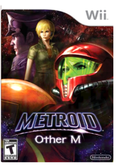 NintendoMetroid Franchise’s Heroine Gets Personal. For decades, Samus Aran has been known as one of the first female protagonists in video games and one of the most enigmatic. Having traded her haunted past for the solitary life of a bounty hunter, Samus finally tells her own tale in this revealing, personal story of her failings, her flaws and ultimately her motivation. Metroid: Other M is an unprecedented collaboration that blends the slick, action-packed production of the world-renowned Team Ninja development team with the game design talents of the creators of the original Metroid. Metroid: Other M is a dramatic new direction for a legendary franchise and a bold new blend between cinematics, storytelling and the best in interactive entertainment.Mortal Kombat Armageddon  Namco Museum Megamix  New Super Luigi U 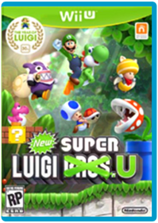 NintendoLuigi takes center stage in his first starring role in a platform adventure! Show off your skills as the green-hatted hero, complete with his trademark high jump, as you experience over 80 new courses! This special packaged version of New Super Luigi U celebrates the Year of Luigi and does not require New Super Mario Bros. U to play.New Super Mario Bros  Co-op/competitive simultaneous multiplayer. View larger. Classic environments with a twist. View larger. Wacky new powerups View larger. Gameplay New Super Mario Bros. Wii, like all the previous releases in the Super Mario Bros. franchise is a side-scrolling platforming game where players collect coins as they attempt to make their way through progressively more difficult game levels using their ability to time jumps over obstacles and avoid a slew of enemies. But although the game contain several well-deserved nods to previous games in the series in the form of iconic characters like Mario, Luigi and two Toads, as well as familiar enemies, sound effects and levels, it is not simply another trip down Mario Bros. memory lane. Taking advantage of the flexibility and power of the Wii and Wii Remote, New Super Mario Bros. Wii manages to preserve the retro experience that fans love about the series, while adding new game features. Notable additions among these include, expansive play levels and new powerups and characters, but by far the most important, and in fact game-defining new feature is simultaneous multiplayer. A Franchise First: Simultaneous Multiplayer Since the very first Super Mario Bros. game took the world by storm in the late 1980s gamers anxious to get into the action have patiently and impatiently waited their turn as the infamous 'player 2.' Those days are no more. In New Super Mario Bros. Wii players can now navigate the side-scrolling worlds alone as before or invite up to three others to join them at the same time, on the same level, at any point in the game for competitive and cooperative multiplayer fun. With the multiplayer mode, the newest installment of the most popular video game franchise is designed to bring yet another type of family entertainment into living rooms and engage groups of friends in fast-paced Super Mario Bros. fun. Controller Choices Via the Wii Remote In another nod to the series' Nintendo Entertainment System (NES) roots, the Wii Remote controller used with New Super Mario Bros. Wii is held sideways, allowing for easy, classic inputs using the D-pad to direct playable characters, the 1 button to jump and 2 button to spit out projectiles like snowballs and fireballs. In addition, players can access powerups with their choice of either the push of a button, or by shaking the Wii remote, again demonstrating the perfect merging of classic gameplay and modern game design which is New Super Mario Bros. Wii. Key Game FeaturesNew Super Mario Bros. Wii offers a combination of cooperation and competition. Players can pick each other up to save them from danger or toss them into it.Supports 2-4 players in multiplayer mode.Mario, Luigi and two Toads are all playable characters, while many others from the Mushroom Kingdom make appearances throughout the game. Players can even ride different Yoshi characters and use their tongues to swallow enemies – or their fellow players.In some areas, players use the motion abilities of the Wii Remote controller. The first player to reach a seesaw might make it tilt to help his or her character reach a higher platform – and then tilt it incorrectly just to mess with other players.New items include the propeller suit, which will shoot players high into the sky with just a shake of the Wii Remote and Mario’s new ability to transform into Penguin Mario.At the end of each stage during the simultaneous multiplayer mode, players are ranked based on their score, the coins collected and the number of enemies defeated. New Super Mario Bros. U 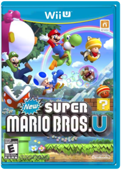 NintendoWIIU NEW SUPER MARIO BROSNintendo Land  Pac-Man Party  Pikmin 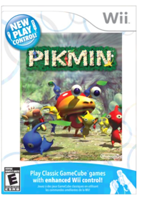 NintendoThey're small. They're plantlike. They're Pikmin! And they can be a space traveler's best friend! Stranded on an unknown planet, Captain Olimar must enlist the help of these native Pikmin. Together, they must rebuild Olimar's spaceship and defend themselves from attackers. Time is tight. Cooperation is key. This innovative action-strategy game is unlike any other game you've ever played, and with remastered Wii controls, it’s never played better!Pikmin 2  Pikmin 3 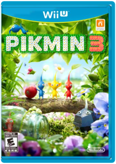 NintendoTake command of three explorers and a legion of adorable Pikmin in a fight for survival. Enlist the help of tiny Pikmin with unique abilities to solve puzzles, battle monstrous enemies, and retrieve food needed to save your depleted home planet. Explore an alien world from a pint-sized perspective, and experience the charming personality of Pikmin.Red Steel 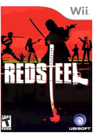 UBI SoftRed Steel is an exclusive Wii launch title that takes full advantage of the console's innovative controller and puts players directly into the action. Your fiancée has been kidnapped and her father - a Japanese mafia kingpin - murdered by a rival gang. The only way to save your loved one and defend your honor is to journey from Los Angeles to Japan and confront the Tokyo underworld.Resident Evil: The Umbrella Chronicles  Resident Evil 4  Resident Evil: Revelations 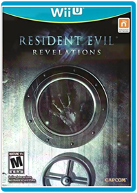 CapcomThe fear that was originally brought to players in Resident Evil Revelations on the Nintendo 3DS system returns redefined for home consoles complete with high quality HD visuals, enhanced lighting effects and an immersive sound experience. Furthermore, the home console version will deliver additional content including a terrifying new enemy, extra difficulty mode and improvements to Raid Mode such as new weapons, skill sets and the opportunity to play as Hunk and other characters from the series. Raid Mode, which was first introduced to the series in the original version of Resident Evil Revelations, sees gamers play online in co-op mode or alone in single player taking on the hordes of enemies across a variety of missions whilst leveling up characters and earning weapon upgrades. The critically acclaimed survival horror title takes players back to the events that took place between Resident Evil 4 and Resident Evil 5, revealing the truth about the T-Abyss virus. Resident Evil Revelations features series favorites Jill Valentine and Chris Redfield, plus their respective BSAA partners - Parker Luciani and Jessica Sherawat. The action begins on board a supposedly abandoned cruise ship, the 'Queen Zenobia', where horrors lurk around every corner before players head for the mainland and the devastated city of Terragrigia. With limited ammo and weapons available, the race is on to survive the horror of Resident Evil Revelations.Shaun White Snowboarding: Road Trip  Star Fox Zero + Star Fox Guard 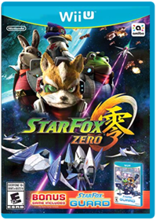 NintendoFox, Falco, Peppy and Slippy (and their original voice actors) are back in a new adventure. Players use the GamePad to control their Arwing spaceship and see the view from the cockpit, while the TV shows the overall context of the full battlefield. The game includes a new Walker transformation for the Arwing, a new Gyrowing vehicle and the return of the Landmaster Tank. The game is scheduled to launch during the 2015 holiday season.Super Mario 3D World 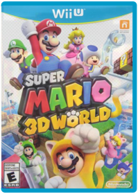 NintendoFor decades, the characters of the Super Mario Bros. franchise have been loved by fans. Their quirky abilities, hilarious backstory and unusual worlds have endeared players, solidifying a place in the annals of video game history forever. So it only makes sense that the Super Mario Bros. legacy should burst into life in 3D with the power of next-generation consoles. Experience the first multiplayer 3D Mario game for the Nintendo Wii U console and dive back into the familiar world with the characters you love, but with an array of new features and added twists.Invite your friends over to work together in the Super Mario Bros. universe or compete for the crown alone. Play as Mario, Luigi, Princess Peach or Toad, and utilize each character's unique abilities and play styles that help you get ahead. Princess Peach, of course, gracefully glides over gaps, while Luigi brings back his trademark extra-high jump. Keep your enemies guessing with the new cat transformation that lets you run on all fours, pounce on foes, attack in midair and use your claws to scamper up walls and goal poles. Each aspect of the colorful 3D environments will have you feeling a combination of nostalgia and excitement, while new obstacles and contraptions, like transparent pipes and vertical conveyor belts, add new puzzle elements to keep you on the edge of your seat. Harness the power of the Wii U GamePad controller's touch screen to search for hidden blocks and freeze enemies in place. Get ready to enjoy the success of a classic in a totally new and thrilling way. Features Super Mario All-Stars: Limited Edition  Super Mario Galaxy  Super Mario Galaxy 2  Super Monkey Ball Banana Blitz 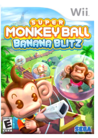 Sega Of America, Inc.AiAi and all his friends have rolled their way onto Nintendo's new console with new mind-blowing puzzle levels and a wealth of new and exciting Party Games specifically designed to fully exploit the innovative Nintendo Wii controller. Other titles will have a difficult time matching the multitude of possible variations in game control as presented in Super Monkey Ball: Banana Blitz.Super Paper Mario NintendoThe newest chapter of the Paper Mario story isn’t just out of this world…it’s out of this dimension! What at first glance appears to be a 2-D sidescroller ripped straight from the stylized pages of the Paper Mario universe soon turns into a hilarious dimension-shifting platformer possible only on Wii! 2-D...AND 3-D! Run through vibrant 2-D worlds, stomping on enemies and breaking blocks....then, with the press of a button, flip into 3-D! In the 3rd dimension, you'll find hidden paths, battle foes, and uncover secrets as you explore the previously invisible depth of the 2-D landscapes! Unique Wii controls! Hold the Wii Remote sideways and control the game in classic Super Mario Bros. style! You can shake the Wii Remote to pull off stylish moves and break out of frigid ice and even point directly at the screen to get helpful hints from your sidekick. Not only that, but you'll also play as Peach and Bowser, both with their own sets of essential skills. Hilarious adventure! When a mysterious villain kidnaps Peach and Bowser and forces them to get married, their union creates a rift of dark energy that threatens to tear the universe apart! Hilarious characters, laugh-out-loud plot twists, and unforgettable dimensions await as Mario makes his way through eight worlds, each more memorable than the last!Super Smash Bros.  Super Smash Bros. Brawl  Tony Hawk's Downhill Jam 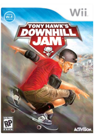 Activision Inc.Tony Hawk's Downhill Jam lets players experience the breakneck speed of downhill skateboard racing as they tear up the steepest terrains in the world while performing tricks and outmaneuvering opponents.Trauma Center: Second Opinion  Wario Ware: Smooth Moves  Wii Fit  Wii Fit Plus 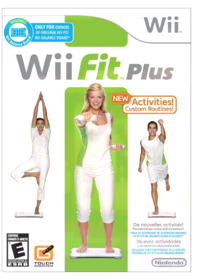 NintendoWii Fit Plus Software Only WiiWii Fit U  The Wii Fit series makes fitness fun for everyone. And now with Wii Fit U, you can workout at home or on the go with the Fit Meter, a handy device that tracks your activity (i.e. calories burned, steps taken, elevation changes). Then sync the Fit Meter data to your in-game profile with one button press. Wii Fit U software lets you create routines, review progress, and compare with friends in online Gym Communities and Miiverse. Shape up with fun activities, from new ones using the GamePad to Wii Fit favorites. View your profile privately on the GamePad or get active with Off-TV play. Explore tons of options to create your perfect workout. Your own personal trainer will help you track your progress and meet your goals. View Larger New, fun “games” utilize the Wii U GamePad and help you stay fit! View Larger Take the Fit Meter with you to track your fitness progress throughout all of your day to day activities. View Larger Challenge yourself with unique ways of staying fit that can only be found on Wii U! View Larger Key Features Shape up with a wide range of fun activities including Yoga, Strength exercises, Balance Games, Dance, Aerobic activities, and more!Whether at home or on the go, the all-new Fit Meter tracks your progress, from calories burned to steps taken—even changes in elevation!With the touch of a button, you can easily sync your Fit Meter data to compare your progress with friends or see how far you’ve gone in Walking Challenges, Altitude Challenges, and more.Enjoy new and unique dual-screen activities like Hosedown or Trampoline Target that take advantage of the Wii U GamePad controller and your TV.The Wii U GamePad offers both privacy and flexibility. By providing a second screen, it lets you perform activities while others watch TV, view personal progress on your own private screen, or even watch and adjust your form using the built-in camera.Create, join, and browse online Gym Communities to share profile info (e.g. achievements, high scores, favorite activities) to keep yourself, your friends, and your family motivated.Cheer on a friend or share parts of your Wii Fit U experience via Miiverse.Create your own personalized workout routine with Yoga, Strength exercises, and other activities or select from recommended routines based on your fitness goals.The new Dance activity allows you to choose from a variety of dance styles with varying difficulty levels.Set goals and track your daily progress with easy-to-understand charts and graphs.Choose a Mii character when creating your own Wii Fit U profile to help track your weight, height, age, and Body Mass Index (BMI).Data from Wii Fit or Wii Fit Plus can be easily transferred into a Wii Fit U profile.Previous Wii Fit and Wii Fit Plus owners who have a Wii Balance Board do not need to purchase a new one—the Wii Balance Board is compatible with Wii Fit U. Wii Party U 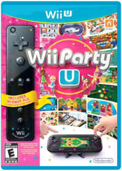 NintendoWii Party U comes packaged with a Wii U GamePad Horizontal Stand and a Black Wii Remote Plus.View Larger Wii Party U with Black Wii Remote Plus Invite your friends over—it’s time to party! Your living room becomes a party playground as you enjoy time together in comically themed board games and minigames that get everyone off the couch. Every kind of party can be found in this one unique package, which includes a Wii Remote Plus as well as a horizontal stand for your Wii U GamePad. Have fun together with this new medley of living room party games! Four game modes change up the way you play with the Wii Remote controllers* and GamePad. Attend a game show that tests how well others know you, or dance together to familiar tunes in House Party mode. If you’re just looking for a short burst of fun, look no further than Minigames mode, which features tournament brackets and a solo dojo fest. Try TV Party if you’re in the mood for a board game. You can also shut the TV off and play two-player tabletop games exclusively on the GamePad, which range from foosball to baseball to slot-car racing. Key Features: Turn your living room into a party playgroundNew ways to party using the GamePadOffers something for everyoneNew tabletop games can be played without a TVIncludes a Wii Remote Plus controllerIncludes a horizontal stand for the GamePad Over 80 all new games included! View Larger Safari style racing against friends and family. View Larger Safari style racing against friends and family. View Larger Wii Play with Wii Remote  Wii Play features nine separate mini-games, including the following: Shooting Range, a point-and-fire game of target practice in the Duck Hunt tradition.Billiards, a simplified variation of nine-ball with stunningly realistic physics that uses your Wii Remote as your pool cue.Find Mii, in which you scan the crowds to find the right Mii—and Miis you and your friends created make an appearance.Tanks!, in which you command a toy tank on a miniature battlefield in a gauntlet of 100 missions.Other games include Pose Mii, Table Tennis, Fishing, Charge!, and Laser Hockey. Every game features a multiplayer mode, so you and your friends can compete for the high score or go head to head to see who’s the best. Wii Play comes with a white Wii Remote so that your friends can join in the action. (Nunchuk not included.) Wii Sports Resort 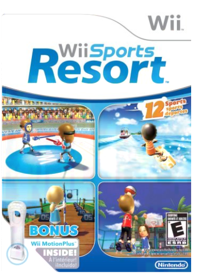 NintendoWii Sports Resort for Nintendo WiiYoshi's Woolly World  ZombiU - Nintendo Wii U  Zumba Fitness 2  |


Library
Collection Total:
1,387 Items
1,387 Items
Last Updated:
Jun 14, 2018
Jun 14, 2018
 Made with Delicious Library
Made with Delicious Library
Springfield, State zipflap congrotus delicious library Hendrix, Jacob